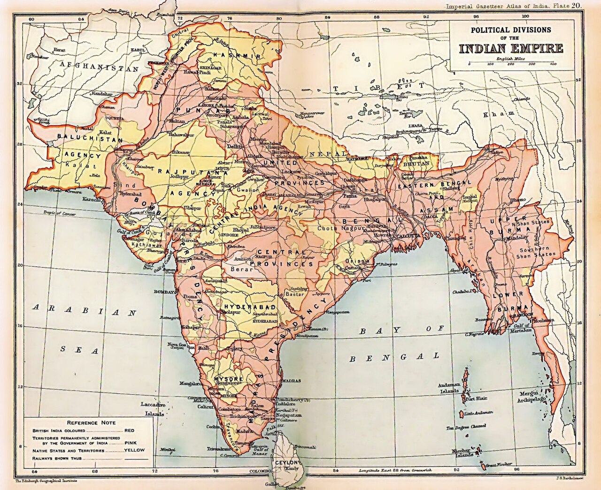

| province | AREA (2km) | Population in million (1901) | chief administrator | map |
|---|---|---|---|---|
| major province |  | |||
| assam province | 130000 | 6 | chief comissioner | |
| bengal presidency | 390000 | 75 | lieutenant-governer | |
| bombay presidency | 320000 | 19 | governer-in-council | |
| central provinces and berar | 270000 | 13 | chief comissioner | |
| madras presidency | 370000 | 38 | governer-in-council | |
| punjab | 250000 | 20 | lieutenant-governer | |
| united province | 280000 | 48 | lieutenant-governer | |
| minor province | ||||
| ajmer-merwara | 7000 | 477 | ex offcio chief commissioner | |
| Andaman and Nicobar islands | 78000 | 25 | chief comissioner | |
| coorg province | 4100 | 181 | ex offcio chief commissioner | |